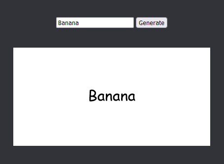
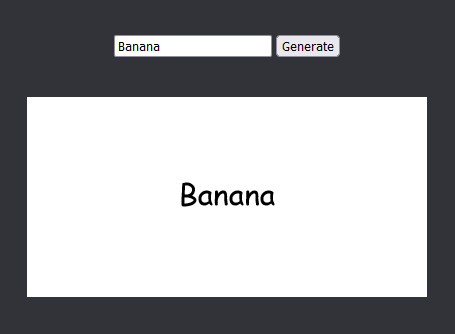

Timeline
Here is a timeline of what's happening on this website:
- 10/5-2023: Finished the first version of the ambigram generator. It is made in ios shortcuts and looks horrendous.
- 11/5-2023: The ambigenerator is reprogrammed in python using Pillow. It's very slow and hosted on replit.
- 24/10-2023: The third version of the generator includes several options per word, and it uses the glyphs marked as "alternate" in the current one!
- 27/10-2023: Made a website unrelated to the ambigenerator, but it only had one page and a sentence of text.
- end of 2023: I learned html and css. Literally after I made the website because then I just guessed.
- 23/1-2024: It's now remade in Javascript and hosted on the second page of the old website!
- 8/2-2024: I finished drawing the new vector glyphs that are still in the generator today!
- 19/3-2024: The morse keyer was added to my website, making it three pages big!
- 16/10-2024: I reprogrammed the morse code keyer with a timing slider, because it was actual spaghetti before.
- 9/1-2024: After exploring some webrings I realized I should make a better website, and I started working on this one.
- 13/1-2024: Added the morse code keyer and ambigram generator, as well as writing an entire essay as the home page.
- 16/1-2024: Finished the new website and published it on the same github domain as the old one!


 
